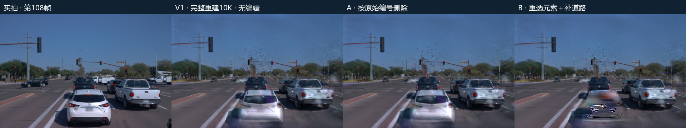
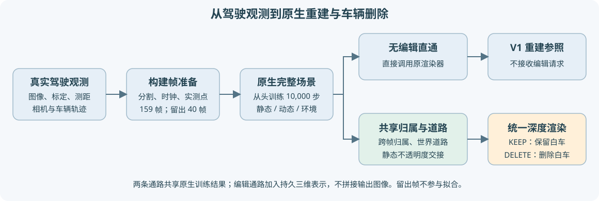

独立原生完整重建此前已经从头训练10,000步，但页面将它折叠为“A的删除前对照”。本次将V1提升为主视图独立列：实拍、V1完整重建、A来源删除、B重选与道路删除。B的保留图仍可展开，不改变两种删除方法及原图。

第108帧属于79–118连续40帧留出，没有用于拟合；因此这里显示未参与训练时刻的原生渲染参照。两路均共享159个构建帧的原生10K底座。这个参照不是理论最优上限，旧删除残留结论也未改变。

正式模型start_checkpoint=null，seed=0，正式更新10,000步，学习率时钟30,000步，训练耗时1336.382秒；既有真实604.435秒生命周期smoke及精确恢复5199工程更新已单列。本轮没有重复训练，新增优化更新0。
纯V1加载完整静态、动态与环境检查点，直接调用原生gaussian_renderer.render，不导入编辑包，不重绑归属、不插入恢复车辆或道路、不做图像拼接。60、108、150、198四帧重新执行此入口，对原V1浮点RGB最大差均为0。全部199个V1原PNG来源逐个核对，本地与平台共398文件相同。
主视图V1不再折叠，保持完整画面默认与原A/B说明。点击V1画面会选中原生KEEP贡献通路，点击A/B选中相应删除通路；无原始float的时刻不补造贡献。第108帧URL定位、四主面板、B保留图、边界跳帧、播放、记录导入导出均经实际JS的DOM/Canvas替身验证，不称浏览器视觉验收。
原生10K与4帧纯V1复算来源 · 原生正式配置 · 验证收据。AutoDL保持开机，无电源操作，human_verdict=null。